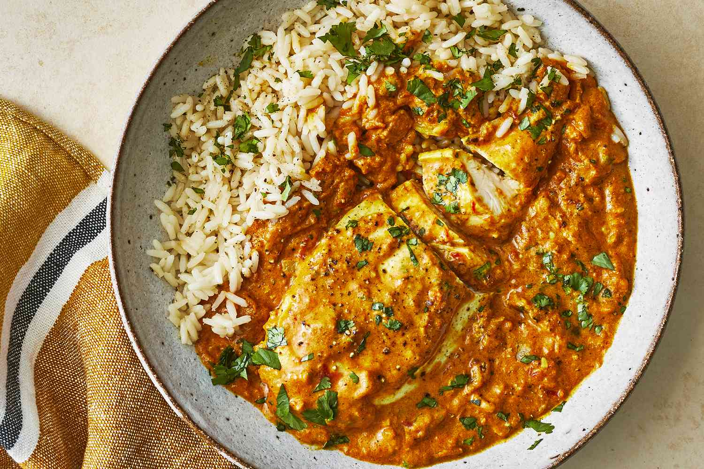

Indian Chicken Curry Recipe

Description
Enjoy the great taste of Indian Chicken Curry at home with this easy-to-follow recipe!
Bold spices like ginger, cumin, and curry powder add rich layers of flavor to the chicken
coated in a creamy tomato-based sauce.
Ingredients
- 2 lbs of skinless, boneless chicken breast halves
- 3 tsp of salt
- 1/2 cup of cooking oil
- 1 1/2 cups of chopped onion
- 1 Tbsp of minced garlic
- 1 1/2 tsp of minced fresh ginger root
- 1 Tbsp of curry powder
- 1 tsp of ground cumin, turmeric, coriander, and cayenne pepper
- 1/2 cup and 1 Tbsp of water
- 1 15 ounce can of crushed tomatoes
- 1 cup of plain yogurt
- 1 Tbsp of chopped fresh cilantro
- 1 tsp of garam masala
- 1 Tbsp of fresh lemon juice